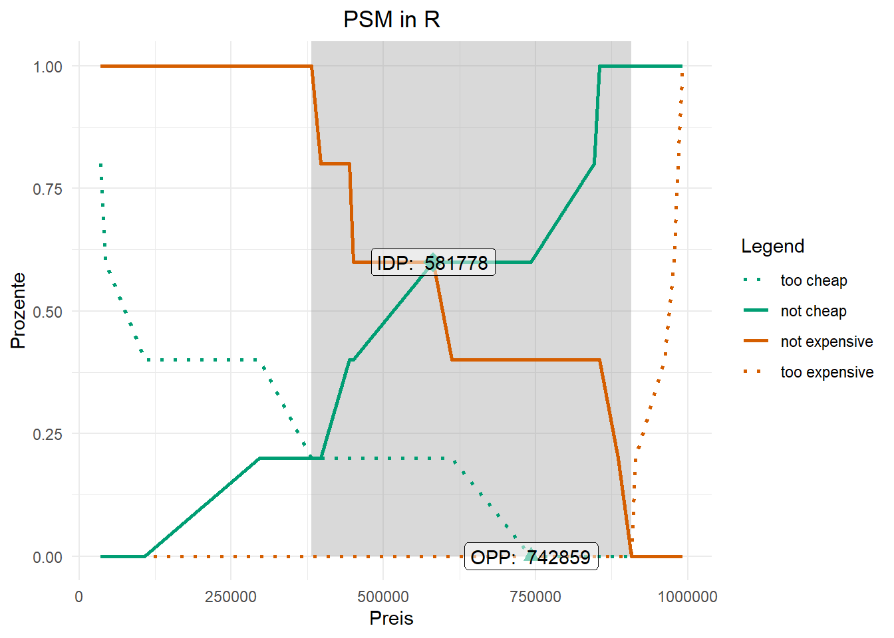

if (!"pacman" %in% rownames(installed.packages())) install.packages("pacman")
library(pacman)
pacman::p_load(haven, kableExtra, knitr,
labelled, tidyverse, pricesensitivitymeter)Diese Übung soll Ihnen die Möglichkeit bieten, sich etwas genauer mit R und RStudio zu beschäftigen. Dies sind skills, die Ihnen im Verlauf des weiteren Studiums sehr helfen werden. Es existieren mittlerweile sehr viele Tutorials im Internet hierzu.
1 Vorbereitung
Note
R ist eine kontext-sensitive Sprache, das bedeutet, dass data anders interpretiert wird als Data. Es kommt also auf die Groß- und Kleinschreibung an.
In R werden die meisten Funktionalitäten durch zusätzliche Pakete (sog. Packages) breitgestellt. Die meisten dieser Pakete sind gut Dokomentiert: https://cran.r-project.org/
Der Code unten evaluiert zunächst ob das Paket pacman auf Ihrem Rechner installiert ist. Wenn dies nicht der Fall ist, dann wird R es installiert.
Alternativ könnten Sie dies auch manuell erledigen in dem Sie zunächst ausführen install.packages(“pacman”) und danach fortfahren mit library(pacman).
Die zweite Zeile läd dann das Paket pacman.
Die dritte Zeile nutzt die Funktion p_load() aus pacman um alle Pakete zu laden (und vorher zu installieren, falls notwendig), welche wir nachfolgend benutzten werden (z.B. pricesensitivitymeter , welches uns Funktionen bereitstellt für die Durchführung einer PSM-Analyse).
Tip
Um besser verstehen zu können, welche Argumente bzw. Daten eine Funktion braucht, können Sie Ihren Cursor in den Namen der Funktion platzieren und dann ‘F1’ drücken.
Lassen Sie uns die Daten laden. Hierfür nutzen wir den Befehl read.csv().
Daten Download
Um die Daten zu laden, klicken Sie bitte auf den Button “Click to download”.
[1] "sys_RespNum" "PSMtoocheap" "PSMcheap" "PSMexpensive"
[5] "PSMtooexpensive"Wie Sie nun rechts in der Environment sehen können, hat der Datensatz insgesamt 5 Variablen:
- Die Respondent ID, also eine Identifier Variable.
- PSMtoocheap: Die Variable enthält die Preise, die als zu günstig wahrgenommen wurden.
- PSMcheap: Die Variable enthält die Preise, die als günstig wahrgenommen wurden.
- PSMexpensive: Die Variable enthält die Preise, die als teuer wahrgenommen wurden.
- PSMtooexpensive: Die Variable enthält die Preise, die als zu teuer wahrgenommen wurden.
2 Analyse
Um die Analyse durchzuführen, laden wir das Package pricesensitivitymeter.
install.packages("pricesensitivitymeter", repos = "https://cran.r-project.org/")
library(pricesensitivitymeter)Wir nutzen hier die Funktion psm_analysis(). Diese Funktion braucht in unserem Fall lediglich die 4 Variablen (zu günstig, günstig, teuer, zu teuer). Wir speichern die Ergebnisse in psm_in_R.
psm_in_R <- psm_analysis(toocheap = d$PSMtoocheap, cheap = d$PSMcheap, expensive = d$PSMexpensive, tooexpensive = d$PSMtooexpensive)Anschließend geben wir die Resultate mittels der summary() Funktion aus.
summary(psm_in_R)Van Westendorp Price Sensitivity Meter Analysis
Accepted Price Range: 381264 - 907352
Indifference Price Point: 581778
Optimal Price Point: 742859
---
5 cases with individual price preferences were analyzed (unweighted data).
Total data set consists of 101 cases. Analysis was limited to cases with transitive price preferences.
(Removed: n = 96 / 95% of data)3 Darstellung
Anschließend wollen wir das ganze nun noch grafisch darstellen. Hierfür nutzen wir das Package ggplot2.
install.packages("ggplot2", repos = "https://cran.r-project.org/")
library("ggplot2")Wir nutzen die Funktion psm_plot(), um die Daten entsprechend für ein Plot auzubereiten. Anschließend rufen wir den Befehl wieder ab und nutzen theme_minimal() von ggplot2. Wie gesagt handelt es sich erstmal um die einfachste Darstellung.
default_psm_plot <- psm_plot(psm_in_R)
default_psm_plot + theme_minimal()
Nun können wir zumindest noch die Axen sowie den Titel anpassen.
default_psm_plot + theme_minimal() + ylab("Prozente") + xlab("Preis") + ggtitle("PSM in R") + theme(plot.title = element_text(hjust = 0.5))
Citation
BibTeX citation:
@misc{dr.marcellichters,
author = {Univ.-Prof. Dr. Marcel Lichters and Joshua Schramm},
title = {Vorlesung {Marketinginstrumente}},
date = {},
url = {https://rpubs.com/M_Lichters/DEA},
langid = {en}
}
For attribution, please cite this work as:
Univ.-Prof. Dr. Marcel Lichters, and Joshua Schramm. n.d.
“Vorlesung Marketinginstrumente.” https://rpubs.com/M_Lichters/DEA.